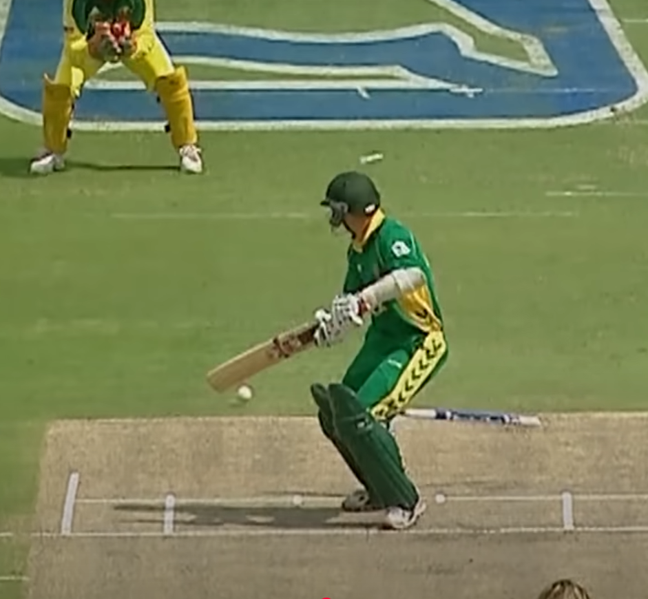
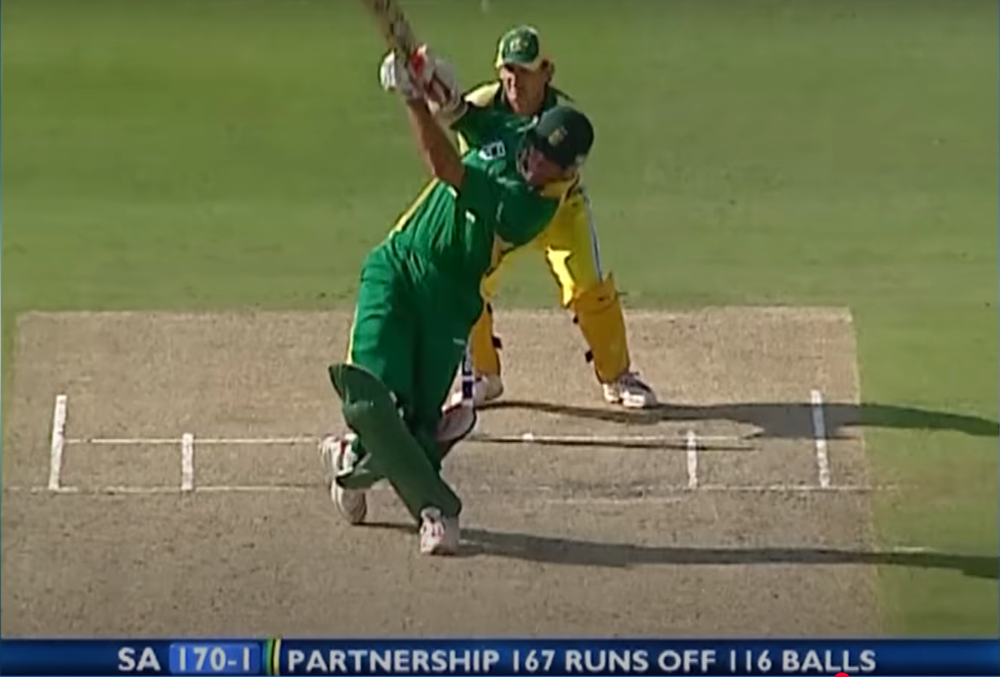
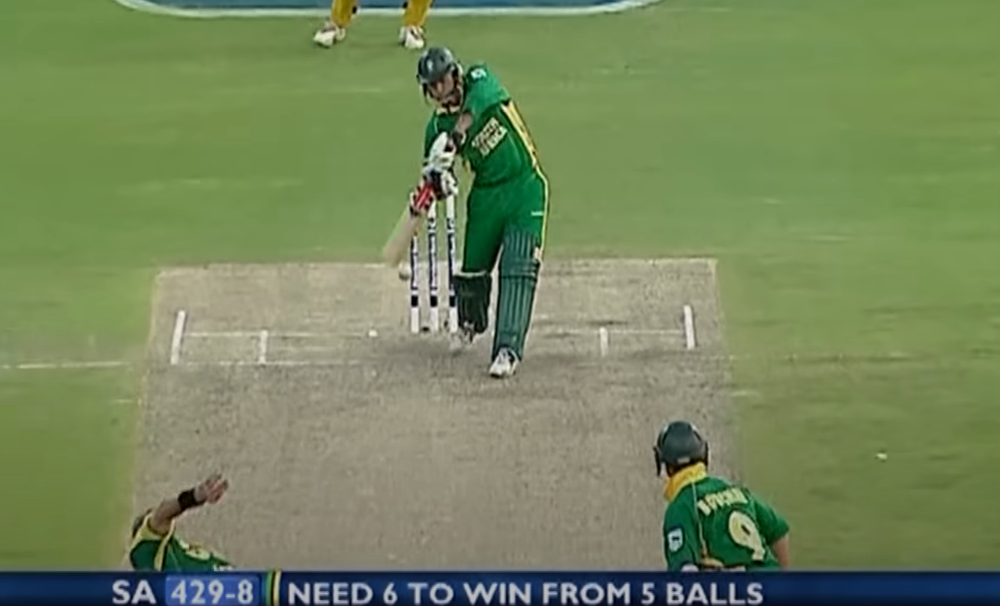
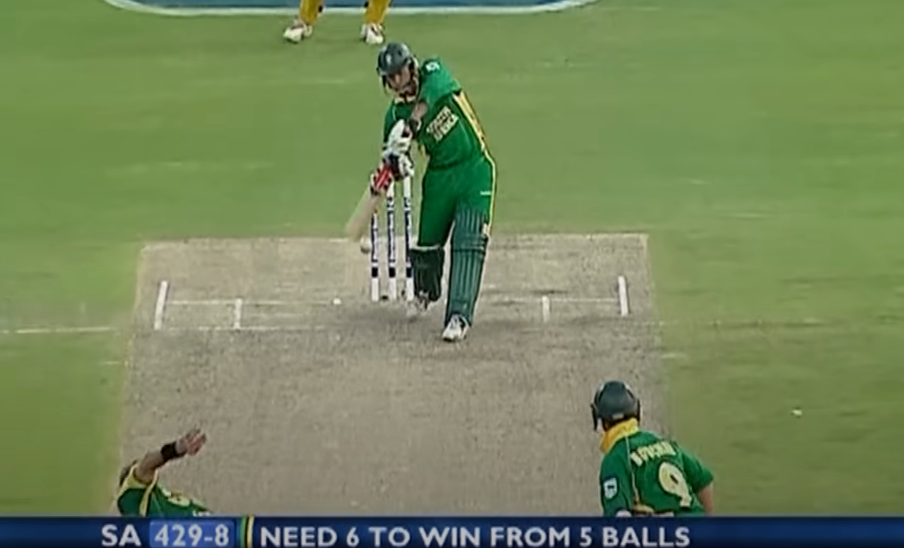

On March 12, 2006, South Africa faced Australia in a thrilling ODI match that is often regarded as one of the greatest in cricket history. The match was played at the Wanderers Stadium in Johannesburg.
Aus won the Toss and Elected to bat first.The pitch was good for batting and it gets better and better as the time goes on , so it will be good for the chasing team.


Adam Gilchrist and Katich are the openers of Australia gave good start. where Aus was 86 for no loss at 14 over completed. At that time Gilchrist was gone at firey 55 runs in just 49 deliveries by Telemachus.

After that Ricky Ponting and Katich played well and took the score to 209 for 1 wicket at 30 over completed. After that Katich and Ponting partnership got broken down by Ntini.Katich played a responsible innings of 79 runs in 90 balls.

After that Micheal Hussy and Ricky ponting slams the bowlers of south africa with their fiery partnership in which ponting scores 164 in 105 balls and Hussy scores 81 off 55 deliveries and Andrew symonds contributed with small hand of 27 runs in 13 deliveries.
.png)
.png)
After that Australia put up the mamooth score of 434 runs in 50 overs. At that time No team reaches 400 run marks, but Australia exceeded that with 34 runs.

Then the SA started with the openers South African Skipper Graeme smith and Dippenar. Australia got their first breakthrough by taking the wicket of Dippenar. South Africa were 3 runs for 1 wicket at Two overs.
The skipper Graeme smith and Gibbs taking the match deeper with scoring runs at the rate to acheive the target with the partnership of 175 runs in 119 balls. Then Skipper Graeme smith walks off with the fantastic 90 runs off just 55 deliveries.

After that Gibbs and AB Devilliers took the score to 250 runs in 30 overs. After that Gibbs got out with the score of 175 runs in just 111 balls. He played a fantastic innings with the strike rate of 157.66.

Mark boucher and Van der waath trying to reach the mamooth target to create a new world record runchase for south africa. Van der waath gone with good innings of 35 runs at the last. Mark boucher scored an important innings with fiery fifty. Hall hits the boundary to confirm that the SA needed 1 from 2 balls and Mark boucher finished the match with Four.
 

.png)
South Africa chased down the target of 435 runs in just 49.5 overs with the loss of 9 wickets. This is the highest run chase in ODI history and also the first team to chase down 400 runs in ODI.

This is a true treat for cricket fans who never seen a 400 runs in ODI, but these two teams acheived that, but the credit goes to SA for the self belief and chased down this mamooth score and also took a place in the History of cricket.